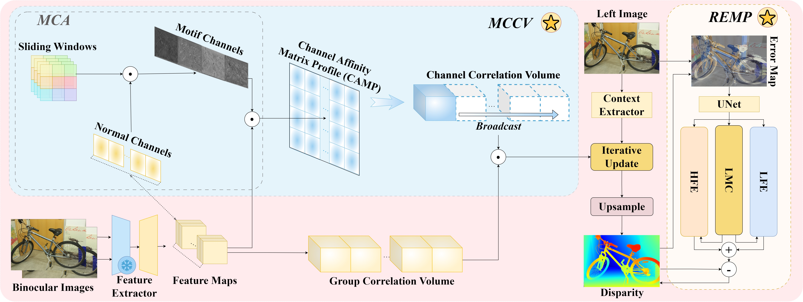
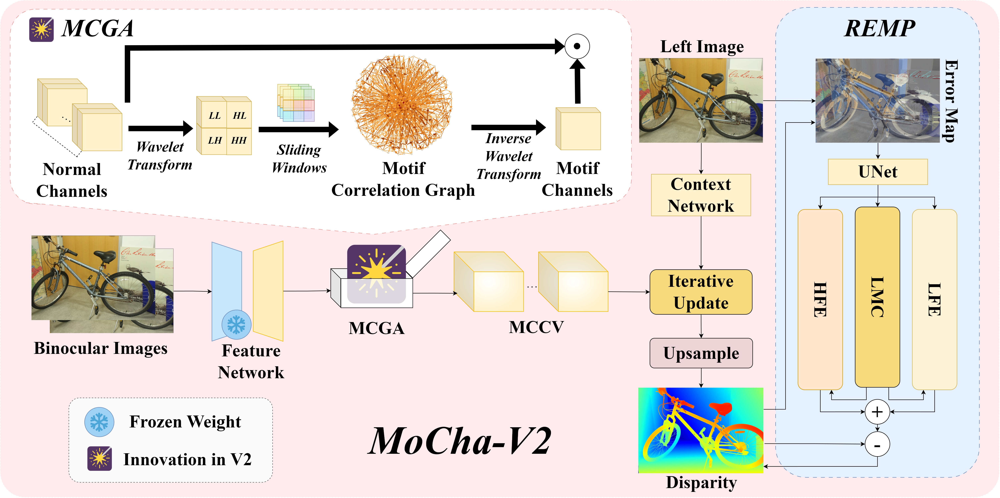
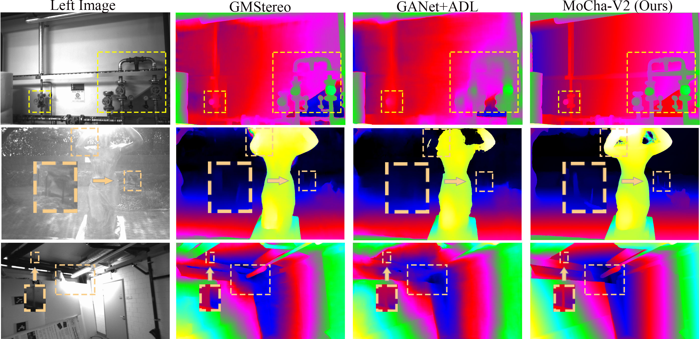

Pipeline of our previous work, MoCha-Stereo. MoCha-Stereo first constructs the Motif Channel Correlation Volume (MCCV). MCCV is build by projecting the relationship between motif channels and normal channels into the basic group correlation volume. Subsequently, we employ a iterative update operator to caculate a disparity, accroding to the correlation value. Finally, the Reconstruction Error Motif Penalty (REMP) module is applied to penalize the generation of the full-resolution disparity map. In REMP, $LFE$ refers to the Low-frequency Error branch, $LMC$ denotes to the Latent Motif Channel branch, and $HFE$ means the High-frequency Error branch.

Architecture overview of MoCha-V2. We improved the method of obtaining Motif Channels in MoCha-Stereo by introducing the Motif Correlation Graph Attention (MCGA).

Visual comparisons with SOTA stereo methods on the ETH3D test set. In the first row, GMStereo and GANet+ADL fail to capture the fine-level geometry of sluices and pipes. In the second row, reflection effects make it challenging for existing methods to accurately identify the contours of the sculpture. Furthermore, among the three methods, only MoCha-V2 successfully detects the outline of the thin object adjacent to the sculpture. In the third row, lighting effects mislead existing methods, resulting in inaccuracies when identifying lamps, walls, and thin objects. In contrast, MoCha-V2 accurately identifies these objects and preserves their geometric contours.